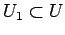
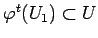
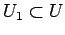
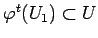
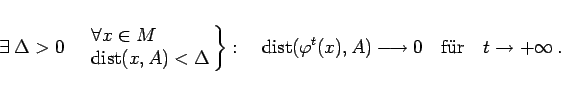
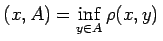

Inhalt Index DeskTop Bronstein

 Dynamische Systeme und Chaos Gewöhnliche Differentialgleichungen und Abbildungen Dynamische Systeme Invariante Mengen
Dynamische Systeme und Chaos Gewöhnliche Differentialgleichungen und Abbildungen Dynamische Systeme Invariante Mengen


Sei A eine unter dem dynamischen System  auf
auf  invariante Menge. Die Menge A heißt stabil, wenn jede Umgebung U von A eine andere Umgebung  von A enthält, so daß  für alle t > 0 gilt. Die unter
invariante Menge. Die Menge A heißt stabil, wenn jede Umgebung U von A eine andere Umgebung  von A enthält, so daß  für alle t > 0 gilt. Die unter  invariante Menge A heißt asymptotisch stabil, wenn sie stabil ist und folgende Beziehung gilt:
invariante Menge A heißt asymptotisch stabil, wenn sie stabil ist und folgende Beziehung gilt:
|  | (17.10) |
Dabei ist dist .